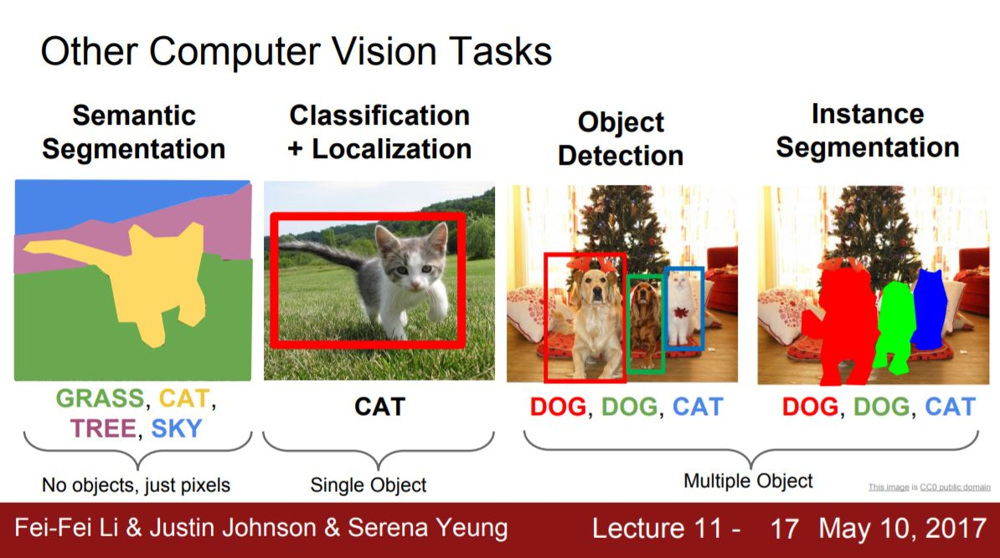
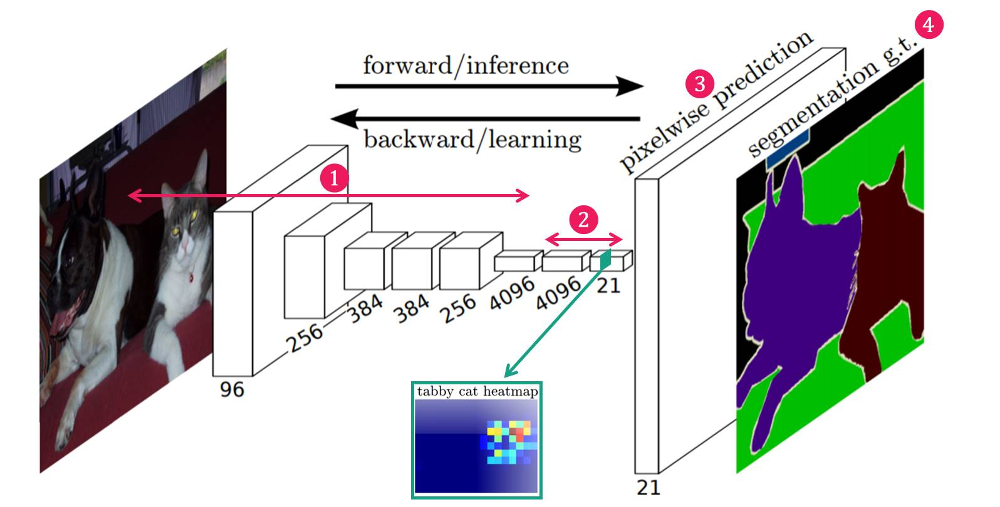

Fully Convolutional Networks for Semantic Segmentation
논문 링크 : Fully Convolutional Networks for Semantic Segmentation
Introduction
Semantic Segmentation는 영상을 pixel단위로 어떤 object인지 classification 하는 것이라고 볼 수 있습니다. (언제나 강력추천하는) cs231n 강의 자료를 보시면 쉽게 잘 나와 있죠.
 Figure 1. Computer Vision Tasks
예전에는 이렇게 pixel 단위로 classification을 하기 위해,
- 그림 2와 같이 일정 영역을 포함하는 window를 만들고,
- window 내 영상의 object를 classifiy해서
- window 중앙의 pixel의 class 값이라고 간주하는
방식을 주로 사용했습니다.
Figure 2.
당연히 계산량의 문제 와 global information을 사용하지 못하고 window라는 제한된 영역의 local information만 사용한다 는 문제가 있을 겁니다.
이 논문에서는 local feature와 global feature를 모두 사용하고 계산량 잡아먹는 주범인 fully connected layer를 없앤 CNN architecture를 제안합니다.
Network Architecture
Fully Convolutional Networks의 구조는 다음 그림 3과 같으며, 크게 4가지 부분으로 구성이 된다고 볼 수 있습니다.
 Figure 3. Architecture of Fully Convolutional Networks
네트워크 구조
(1) Feature Extraction : 일반적인 CNN의 구조에서 많이 보이는 conv layer들로 구성되어 있습니다. (2) Feature-level Classification : 추출된 Feature map의 pixel 하나하나마다 classification을 수행합니다. 이 때 classification된 결과는 매우 coarse합니다. (그림 3에서 초록색 박스에 tabby cat class에 대한 Classification 결과 참고) (3) Upsampling : coarse 한 결과를 backward strided convolution 을 통해 upsampling하여 원래의 image size로 키워줍니다. (4) Segmentation : 각 class의 upsampling된 결과를 사용하여 하나의 Segmentation 결과 이미지를 만들어 줍니다.
그러면, 각 네트워크의 내부들을 한번 살펴보겠습니다.
####Feature Extraction VGG-19 network를 feature extractor로 사용한다고 가정을 해봅시다. 이 경우 conv1 ~ conv5 layer ( or pool5 layer) 까지 통과하면서 feature를 추출합니다. 낮은 layer의 경우 작은 receptive field를 지니므로 작은 크기의 feature가, 높은 layer의 경우 높은 receptive field를 지니므로 큰 크기의 feature가 추출되게 되죠. 이렇게 추출된 최종 feature map (conv5 or pool5 layer)을 이용하여 다음 단계에서 coarse한 segmentation map 을 만들어냅니다.
Figure 4. Feature Extraction on VGG-19 Networks
Feature-level Classification
원래 VGG network는 이렇게 추출된 feature의 뒤에 4096, 4096, 1000으로 이어지는 fully connected layer를 연결하여 classification을 합니다만(그림 4), 본 논문에서는 이런 fully connected layer를 없애버립니다. 그리고, 1x1 conv layer를 추가합니다. 그림 3에 보시면 4096, 4096, 21 이라고 표현된 1x1 conv layer를 보실 수 있는데요. (1000이 21로 바뀐 이유는 이 논문에서는 PASCAL VOC dataset으로 실험을 하는데, 그 데이터의 클래스가 20개 + background 이기 때문입니다.) 이 1x1 conv 의 결과물이 결국 각 class의 feature map 상에서의 classifiation (즉, segmentation) 이 됩니다. 그림 3에 보면 conv8(마지막 1x1 conv) layer의 depth channel 중에서 tabby cat에 해당하는 class의 feature map 상에서의 classification (즉, segmentation) 결과 heatmap 을 볼 수 있습니다. 마지막 1x1 conv layer에서 depth channel은 각 class를 의미하므로, 어떤 class의 segmentation heatmap도 추정할 수 있습니다.
Upsampling
그런데 feature map level에서 segmentation 한 결과는 너무 coarse한 결과입니다. (그림 3의 tabby cat heatmap 보면 깍두기처럼…) 따라서, 이 coarse한 heatmap을 dense하게 (원래의 image size로) 만들어주어야 합니다. 본 논문에서는 upsampling(backwards strided convolution)을 사용합니다. 그러면 각 class별로 dense한 segmentation 결과를 얻을 수 있습니다. 즉, 원래 image의 폭을 W, 높이를 H, 라고 한다면, WxHx21 의 dense heatmap결과를 얻을 수 있습니다.
Segmentation
그러나 우리는 결국 각 class 별 결과를 추정하고자 하는 것이 아니죠. 하나의 이미지에서 모든 class의 segmentation된 결과를 얻어야 합니다. 그래서 윗 단계에서 얻어진 upsampling된 각 class별 heatmap을 softmax를 이용하여 가장 높은 확률을 가지는 class만 모아서 한장의 segmentation 이미지로 만듭니다.
Skip Combining
그런데 3단계의 Upsampling 과정에서 coarse한 결과를 dense하게 만들어줄 때 너무 많이 뻥튀기를 하기 때문에 detail아 다 뭉개진 segmenation 결과를 얻을 수 밖에 없습니다. (그림 5 참고)
 Figure 5. Segmentation Result from the Last Conv Layer
Figure 5. Segmentation Result from the Last Conv Layer
다음 그림 6과 같은 CNN 구조의 Fully Convolutional Networks가 있다고 가정해봅시다. 최종 결과물인 FCN-32s는 32배로 upsampling을 하기 때문에 detail이 많이 사라진 segmentation 결과를 보여줍니다.
Figure 6. (Conventional) Fully Convolutional Networks : FCN-32s
본 논문에서는 이 문제를 해결하기 위해 그 이전 layer의 feature map을 이용하는 skip combining 기법을 사용합니다(그림 7 참고).
Figure 7. Fully Convolutional Networks with Skip Combining : FCN-16s
그림 6에서는 마지막 conv layer인 conv 7에서 32배 upsampling하여 segmentation 결과를 만들었습니다. 하지만, 그림 7에서는 마지막 conv layer 결과를 2배 upsampling 하고 마지막 pooling layer (pool5)이전 단계 즉, pool 4 layer의 결과와 합쳐줍니다. 그리고 난 후, 그 합쳐진 결과를 16배 upsampling 하여 FCN-16s 라는 segmentation 결과 이미지를 만들어 냅니다.
여기서 합친다는 말은 그냥 더해준다는 의미입니다. 다음 코드를 참고하세요.

그렇다면 하나 더 이전의 pooling layer와도 합칠 수 있지 않을까요? 당연히 있습니다. 그림 8은 pool 3 layer + 2배 upsampling된 pool 4 layer + 4배 upsampling 된 conv7 layer 값을 다시 8배 upsampling 하여 FCN-8s라는 보다 detail한 segmentation 이미지를 만들어내는 구조입니다.
Figure 8. Fully Convolutional Networks with Skip Combining : FCN-8s
자 그러면 각 skip combining 한 후의 최종 segmentation 결과를 살펴볼까요? 확실히 FCN-32s에 비해 FCN-16s가, FCN-16s에 비해 FCN-8s가 detail한 segmentation 결과를 보여줌을 알 수 있습니다.
Figure 9. Segmentation Results